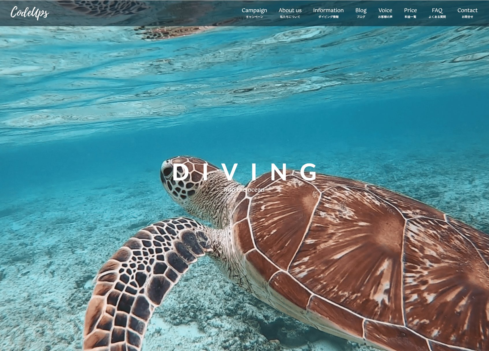
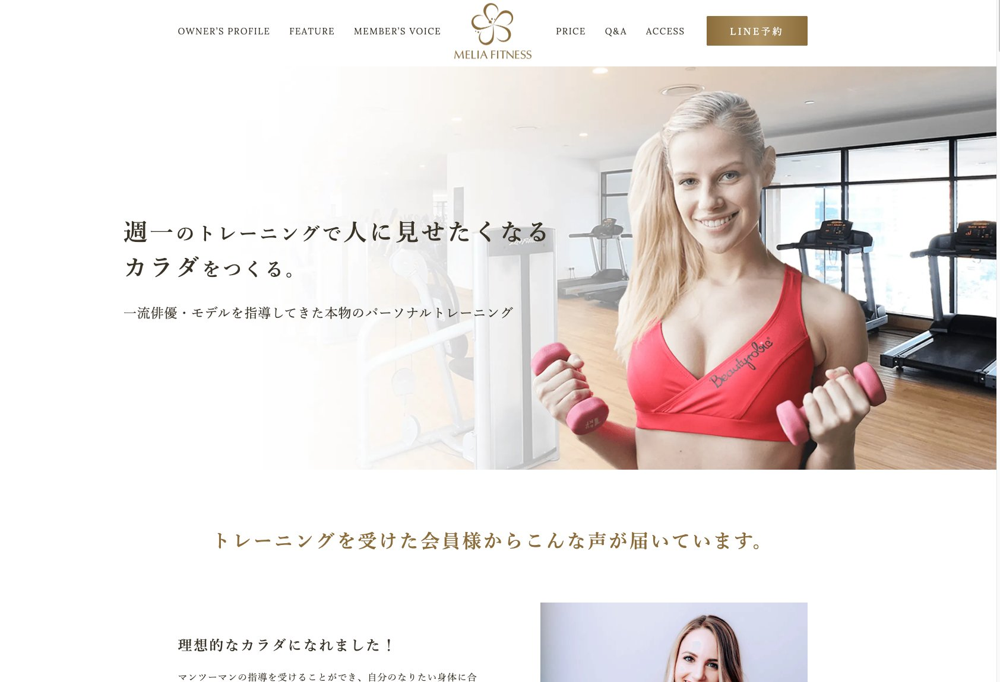
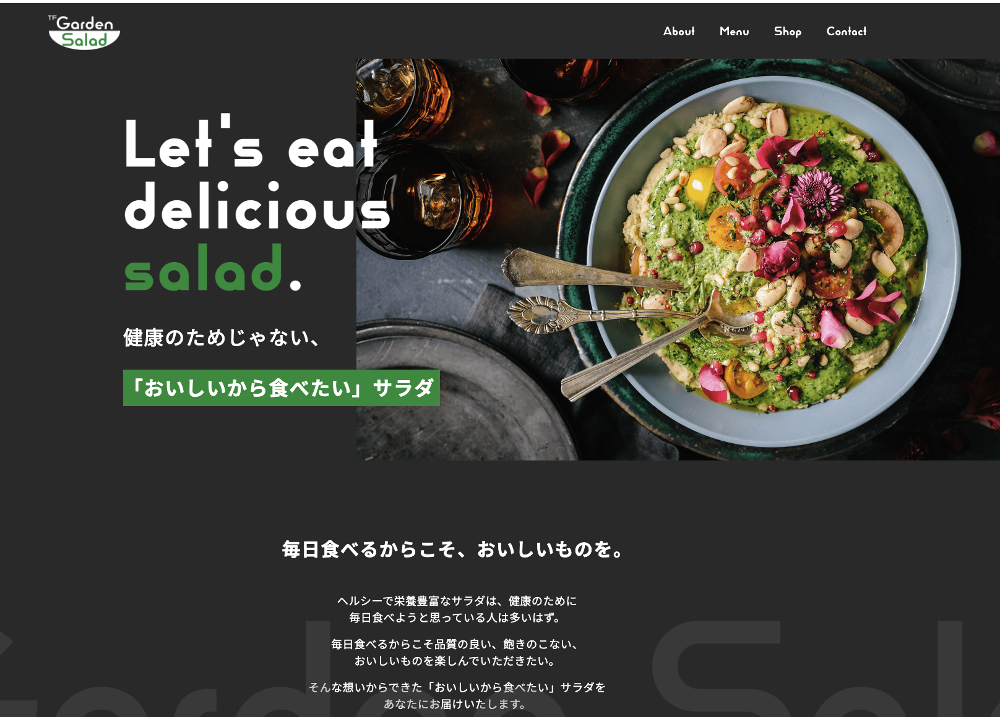
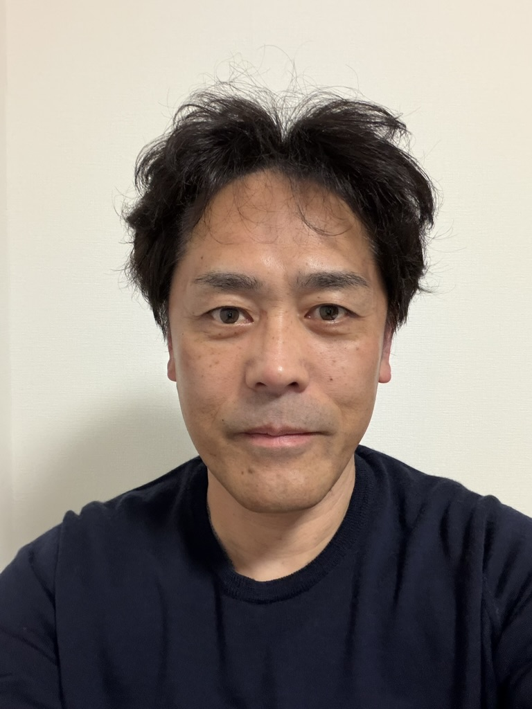

Web Coder / Frontend
認識ズレをなくし、手戻りを減らす
Web実装のパートナー

LP→WordPress化を想定した設計。BEMを用いたCSS設計で保守・改修しやすい構成を実装しました。

AOSスクロールアニメーションを実装し、動きのあるLPに仕上げました。SP・PC両対応のレスポンシブ設計。

洗練されたカフェサイトをコーディング。SP・PC両対応のレスポンシブ設計で、細部まで丁寧に実装しました。
デザインカンプをもとにHTML/CSS/JavaScriptで忠実に再現します。レスポンシブ対応・アニメーション実装も対応可能です。
オリジナルテーマ構築から既存テーマの改修まで対応。ACFを活用した更新しやすい管理画面設計も得意です。
細かい修正対応や下層ページの追加実装など、スポット案件にも柔軟に対応します。急ぎの案件もご相談ください。
PC・タブレット・スマホ全デバイスで崩れない実装を心がけます。細かい幅での表示確認も徹底して行います。

小山内 知永
Tomonaga Osanai
はじめまして。Web実装を専門に活動しているWebコーダーの小山内知永と申します。
HTML/CSS・JavaScript・WordPressを中心に、実装パートナーとして活動しています。細かい作業が得意で、ズレや違和感に気づきやすいことが強みです。
繁忙期の短納期案件や細かい修正対応など、お役に立てればと考えています。